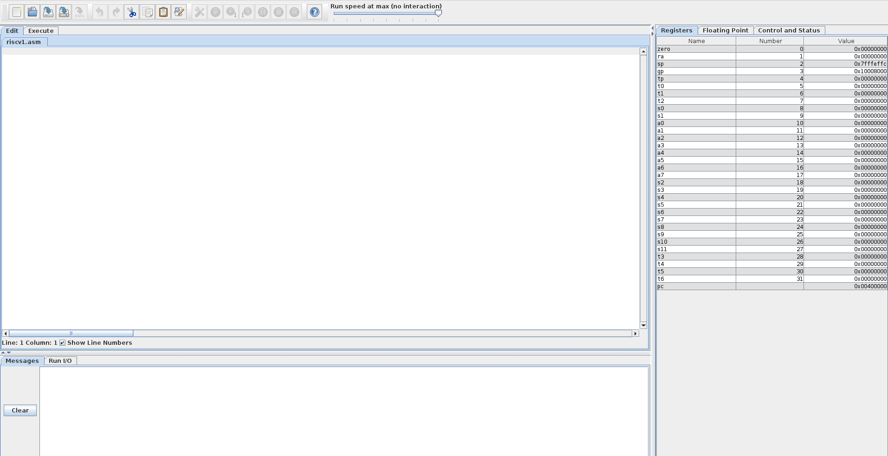
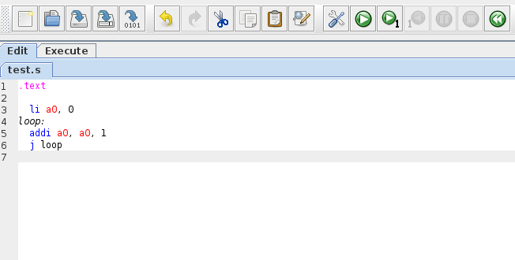
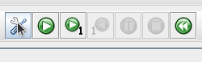
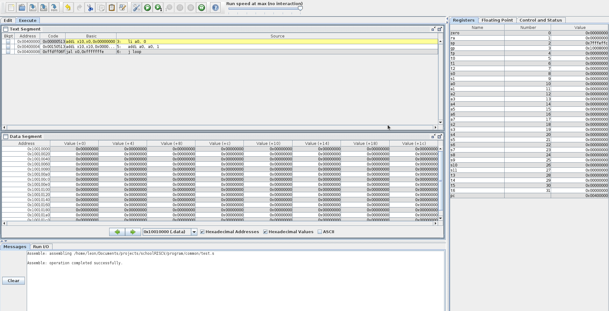
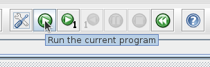
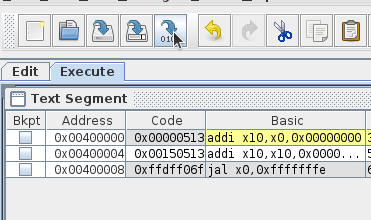
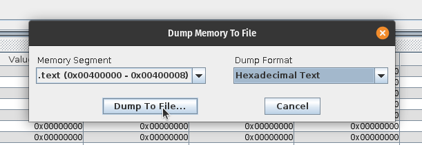
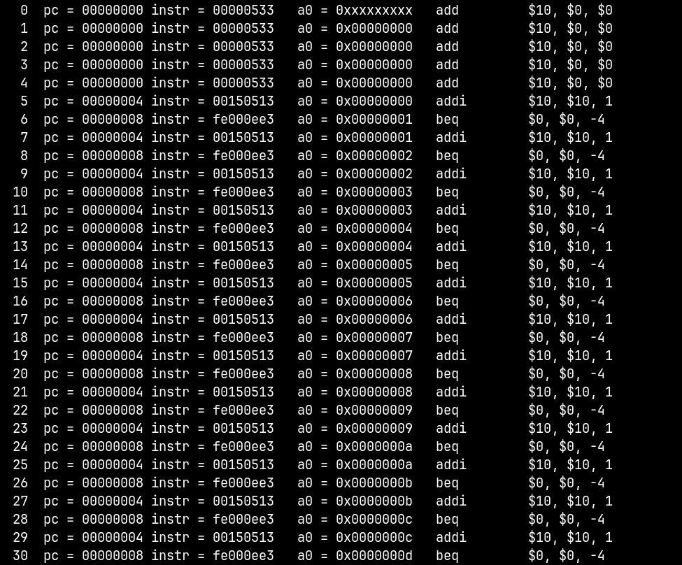
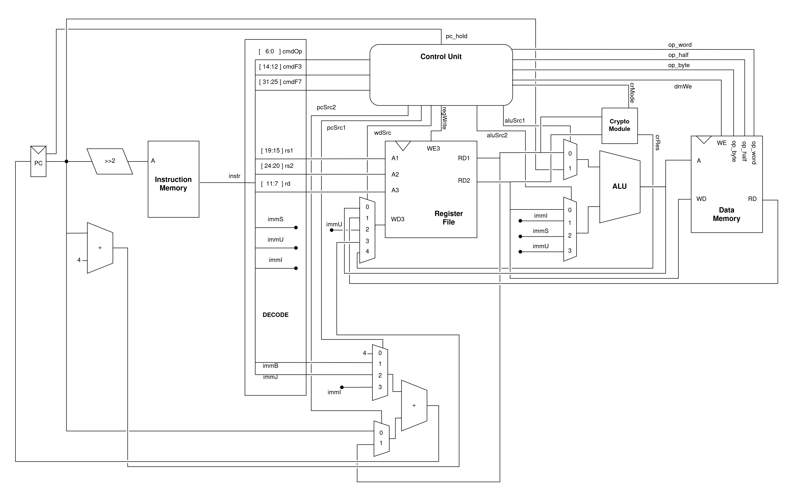

Документация
Авторы: Фролов Кирилл, Мирошниченко Лев
Структура репозитория
В ветке "rv32i" представлена версия ядра schoolRISCV, поддерживающее базовый набор инструкций RV32I, а в ветке "master" представлена версия расширенного ядра schoolRISCV с добавленным криптографическим модулем.
Содержимое репозитория:
- board - папки с заготовленными проектами Quartus для различных плат ПЛИС (название папки соответсвует названию платы);
- doc - документы со спецификацией архитектуры RISCV;
- install - различные инструменты для работы с проектом, которые можно установить;
- materials - результаты моделирования, портирование, ресурсного и временного анализа базового и расширенного ядер schoolRISCV с программами, выполняющими криптографические операции;
- program - папки с разработанными программами, каждая папка называется аналогично содержащейся в ней программе (в каждой папке есть файл main.S или *.asm с текстом программы на языке ассемблер и файл program.hex с программой, представленной в машинном коде);
- в ветке "master" отдельно представлена папка "native_crypto" с программами, использующими криптографические инструкции;
- в ветке "rv32i" отдельно представлена пака "prog_crypto" с программами, выполняющими криптографические операции на базовых инструкциях набора RV32I;
- src - файлы с описанием ядра на языке Verilog;
- submodules - файлы с описанием криптографического модуля;
- testbench - файлы с описанием тестбенчей, разработанных для моделирования работы ядер
Разработка программ
Для разработки программ потребуется использовать ассемблер RARS (rars1_4.jar
находится в директории program/common, для запуска использовать команду java -jar rars1_4.jar).
Интерфейс RARS выглядит следующим образом:

Рассмотрим ассемблирование программы на простом примере, для начала необходимо разработать программу в текстовом редакторе:

Для ассемблирования необходимо нажать кнопку "Assemble the current file":

В результате программа перейдёт в следующее состояние:

Также программу можно просимулировать и отладить непосредственно в RARS, для этого необходимо нажать кнопку "Run" справа от кнопки "Assemble the current file":

Для дампа программы в шеснадцатеричный формат необходимо нажать кнопку "Dump machine code":

И выбрать формат "Hexadecimal Text":

RARS не умеет обрабатывать инструкции криптографического расширения, для их использования нобходимо вставить инструкцию на машинном коде в результирующий файл дампа.
Симуляция ядра
Для симуляции ядра потребуется программа в формате .hex, её получение подробно
описано в разделе Разработка программ.
Создайте отдельную папку для Вашей программы в директории program/ и
скопируйте в неё файл Makefile из любой другой директории в program/. Далее
добавьте в новую директорию прогрумму в формате .hex.
Для старта симуляции перейдите в созданную директорию и введите команду make icarus. Результат будет, примерно, следующий (симуляция описывает процесс для
каждой инструкции):

Синтез ядра
Для произведения синтеза ядра необходимо:
- Предварительно установить приложение Quartus;
- Перейти в папку board, а затем в папку с названием платы ПЛИС, на которую будет производится портирование;
- Переименовать содержащиеся в папке файлы путем удаления символа "_" из расширения файла (Пример:
*.qpf_->*.qpf); - Запустить программу Quatus и в верхнем меню программы нажать кнопку "File" и из выпавшего меню нажать кнопку "Open Project", после чего выбрать файл
*.qpfв папке из пункта 2;
- Убедиться, что все файлы из папки "src" добавлены в проекта, в обратном случае добавить все недостающие файлы путем нажатия кнопки "File" и нажатия кнопки "Open" из выпавшего меню. При выборе файлов в проводнике установить галочку в поле "Add file to current project";
- Выбрать программу, которую необходимо выполнить на ядре из папки "program" и скопировать файл
program.hexв папку с проектом из пункта 2; - Выполнить синтез проекта, нажав кнопку "Start Compilation" в панели инструментов Quartus;
- Дождаться завершения синтеза проекта;
- В окне "Compilation Report" можно ознакомиться с результатами синтеза проекта и с числом использованный ресурсов.
Для получения значения максимальной частоты, на которой способно работать ядро, необходимо:
- Нажать из верхнего меню кнопку "Tools" и из выпавшего меню нажать кнопку "TimeQuest Timing Analyzer";
- В открывшемся окне в нижнем левом меню "Tasks" нажать кнопку "Report Fmax Summary";
- Ознакомиться с максимальной частотой, на которой способно работать ядро.
Для загрузки проекта на плату ПЛИС необходимо:
- Предварительно подключить плату ПЛИС к компьютеру;
- Нажать кнопку "Programmer" в панели инструментов Quartus;
- Нажать кнопку "Hardware Setup" и выбрать устройство для программирования;
- Нажать кнопку "Start".
Описание базового ядра
Схема-описание ядра schoolRISCV, поддерживающего базовый набор инструкций RV32I:
Основные компоненты ядра:
- Instruction Memory - ROM-память, хранящая список испольняемых инструкций, представленных в машинном коде;
- PC (Program Counter) - программный счетчик, указывает на инструкцию, испольняемую на данной итерации;
- Decode - блок, декодирующий значение из Instruction Memory на основе спецификации RV32I;
- Register File - память, хранящая значения регистров;
- A1, A2, A3 - адресные порты;
- RD1, RD2 - порты чтения данных;
- WD3 - порт записи данных;
- WE3 - порт разрешения записи;
- ALU - блок, выполняющий арифметические и логические операции над входными операндами;
- Data Memory - память данных;
- A - адресный порт;
- RD - порт чтения данных;
- WD - порт записи данных;
- WE - порт разрешения записи;
- op_byte, op_half, op_word - порты управления режимами чтения, записи (байт, полуслово, слово);
- Control Unit - управляющий блок, идентифицирует инструкции и в зависимости от исполняемой инструкции изменяет значения управляющих сигналов мультиплексоров, памяти регистров и памяти данных;
- Логика перехода в нижней части схемы - состоит из 2-х мультиплексоров и сумматора, рассчитывает следующее значение Program Counter.
Описание расширенного ядра
Схема-описание расширенного ядра:

Описание изменений:
- Crypto Module - криптографический модуль на которое отправляются вычисления специальных инструкций
- crMode - шина выбора криптографической операции
- crRes - результат выполнения операции
- Control Unit
- pc_hold - управляющий сигнал для программного счётчика, приостонавливающий его работу